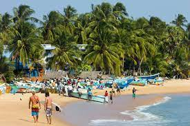

Arugam Bay

Semicircular curl soft sand, cool sea wind, serene bluish landscapes, and beautiful light blue
horizon keep Arugam bay well reputed for its aesthetic beauty. It’s a well-known point break that
everyone recommends to have maximum surfing experience from the whole country. If you are a surfer,
take your surfboard and explore the energy of the blue waves. You will swear there is no experience
like that for your entire life.
It is comparatively small with other beaches. But, there are always several people hanging around
the place and feel the scenic beauty, especially in its world-famous rush months. If you are not
already a surfer, there are various stuff you can still do. What about the swing in a hammock while
drinking a fresh King Coconut in the evening? Either having breakfast or lunch in a beachfront
guesthouse or an Oceanside restaurant? Or climb up to the famous Elephant Rock which is located at
an end of the bay and have a view of the whole area.
Arugam Bay is surrounded by greater wildlife. If you stay a few days, be aware of elephants who pass
the area every morning and evening. And if you are a lonely visitor, better avoid unknown waterways
and rivers as crocodiles are active here. Muhudu Maha Viharaya isn’t far away from Arugam Bay which
is a charming temple located in dunes in Portugal. You can make a combined visit to the beach along
with this nice temple.
Kumana National Park
Another amiable well-known eco-tourism attraction has located in the southeast corner of the
country. Authentic Jungle experience to be having at the heart of the wilderness. A popular bird
sanctuary in Sri Lanka, being a prime bird-watching destination of the whole world. Wetland zones
begird with dry zone thorny forests with a wide range of aquatic plants and trees.
Many multitudes of birds breed roosts in a “Kumana Villu” which is the most significant feature
here. A two-hundred-hectare natural swamp lake in the neighborhood of Kumana and Yala National park.
This huge swamp is colonization for many species of water birds.
The swamp is undergoing occasional submergence with seawater which lets many water birds nest during
their breeding seasons. Pelicans, Spoonbills, Herons, Painted Trorks, and White Ibis including
several endemic verities. The Black-necked stock is a very rare bird that has been nearly observed
to live in the swamp. Most importantly, a large number of threatened reptiles are breeding and
nesting here, three rare turtle species, and a globally vulnerable crocodile species.
Apart from the beautiful birdlife, there are endemic, migrant, and endangered mammal species.
Elephants, Leopards, Wild Boars, Bears, and Fishing cats are often found hunting and feeding around
the Swamp. Yala East, is another name for this, is less crowded and lower in animal density,
compared to the busy neighbor. If you have an idea of visiting Kumana, better read some papers and
search on google before visiting this national park.
Buddhangala Monastery

An ancient monastery stands deep in the jungle, an outcrop of five massive rocks, lost in the
chronicles enclosed with a dense wilderness. The jungle around the monastery infested with wild
animals let the pleasance remain silent for thousands of years in the rural Digamadulla area. It
enlisted in the least-known historic places in Sri Lanka.
The name, Buddhangala derived from the shape of the rock formation which looked similar to Lord
Buddha lying on a floor. Hence, occupied by the name, Buddhangala. The monastery has been abandoned
over centuries due to the transpose of Kingdoms in old Sri Lanka. It wasn’t even documented until if
found in 1964 by a young monk who traveled along the dene. After founding the ruins of the
monastery, he has cleared the surrounding into a fairer level together with another monk.
Years later, the monastery became popular as the ancient relics emerged through the excavation.
Carefully enshrined golden lotus flowers, a gold casket was found through excavation which are
believed to be consecrated by a private donor. The casket is believed to be created in the 5th
century according to the characteristics of the outer golden plates.
Years later, in 1974, there had been built a bell-shaped new Sthupa by the former president, William
Gopallawa. But, once again it faced a darker period in the civil war of Sri Lanka with terrorism.
Until then, it remains quiet and unpopular without the considerable attention of the government up
to now.
Kallady Beach

Batticaloa is connected by bridge to a long, shoreline fringed peninsula that holds the Kallady neighborhoods. A few territories here have more shade than others. Kallady has an abandoned portion of beach that has ideally saved the tsunami proof all around. Kallady beach is a stunning shoreline on the east bank of Sri Lanka. Decent place to spend your evening in leisure and appreciate the dusk
Batticaloa Lighthouse
This historic lighthouse isn’t open, yet you can see it as it puts up as one of the extraordinary places to visit in Batticaloa to capture some beautiful pictures. You can take a boat trip around the inlet to have an incredible perspective of this lighthouse.
Kalkudah and Passikudah

Situated around 35 km. north of Batticaloa, the two exquisite seas sides of Kalkudah and Passikudah settle on either side of the palm-tipped Kalkudah cliff. The twin bay shorelines, all around shielded from the monsoon by an oceanic reef make up a perfect spot for windsurfing, bathing, water skiing, sailing and so forth. It is a standout amongst other known reef structures in the eastern bank of Sri Lanka and has also been intended as a Marine Sanctuary by NARA.
Koneswaram Temple

Undoubtedly one of the first sites to be ticked off the Trincomalee tourist map is this revered temple located atop a cliff inside Fort Fredrick. This important Hindu pilgrimage site displaying Darvidian architectural style is believed to be one of the Panch Ishwarams(five abodes of Shiva) with a swayambhu lingam. The shrine exudes sacred vibes and is a wonderful place for seeking solace in the divine presence. Surrounded by magnificent views of the Indian Ocean, this fabulous temple tops our list of places to visit in Trincomalee.
Seruwila Mangala Raja Maha Vihara

Counted amongst the holiest Buddhist sites in Sri Lanka, this temple is one of the important places to visit in Trincomalee for the spiritually inclined travellers. The 2nd century stupa was originally built by King Kavantissa and holds the sacred frontal bone of Lord Buddha. Thousand of devotees visit this sacred Buddhist Vihara every year to pay homage and seek blessings of the enlightened one. Also visit the new complex with a huge statue of Buddha; remember to be modestly dressed and remove your footwear.
Uppuveli & Nilaveli Beaches

North of Trincomalee, are these two pristine palm-fringed beaches perfect for a lazy, rejuvenating day by the sea. Uppuveli has powdery white sand, clear emerald waters and a lovely beach vibe with restaurants offering delicious Sri Lankan cuisine. This laidback paradise is perfect for swimming, whale watching, volley-ball or simply relaxing by the sea. Nilaveli beach is further north, bigger, calmer and totally unspoilt by the onslaught of tourism. When you’ve covered all places to visit in Trincomalee map, head to these beautiful beaches to steal some relaxing moments.